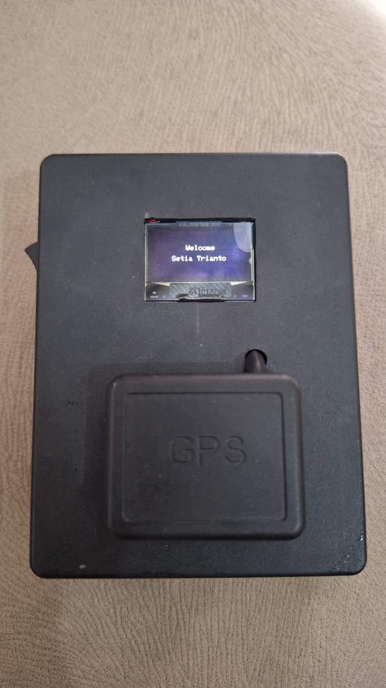
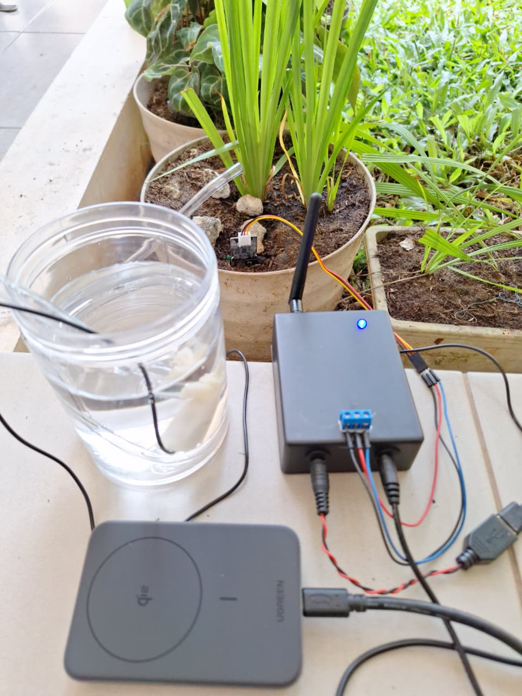

Selected Prototypes

Portable GPS System

Wireless Control Prototype

Smart Irrigation IoT System
Real-time soil monitoring with autonomous irrigation control.
Custom IoT systems, automation, and telemetry solutions
Independent embedded systems and IoT engineering practice focused on applied prototyping, telemetry implementation, and experimental electronics development. Completed national IoT technical training program (Kominfo, 2022). Selected works are registered under Indonesian Intellectual Property (HKI).


Real-time soil monitoring with autonomous irrigation control.
Ongoing applied work includes custom DC power supply design, RF signal monitoring prototypes, reverse engineering analysis, hardware teardown evaluation, and IoT integration using ESP32 / ESP8266.
Discuss your system needs
Email: setia.trianto@gmail.com
YouTube: youtube.com/@STTechID